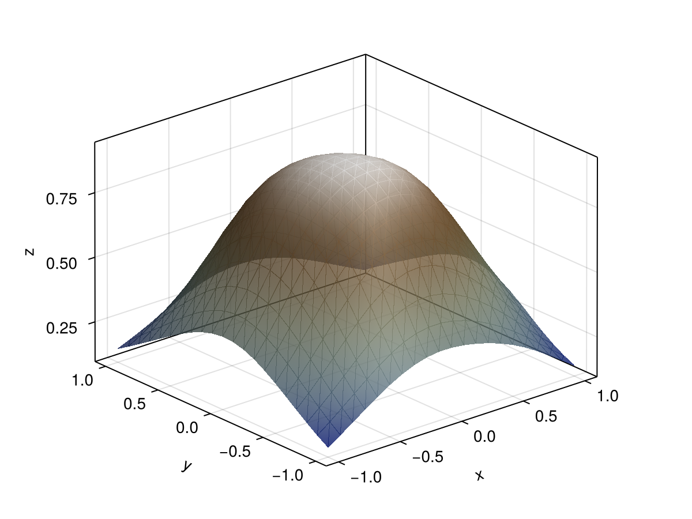

Training a Symbolic Neural Network
SymbolicPullback is a drop-in replacement for a Zygote-based pullback, so a SymbolicNeuralNetwork can be trained with the optimizers of GeometricMachineLearning without any further ceremony.
We approximate a Gaussian on $[-1, 1]\times[-1, 1]$ with a small feed-forward network.
using SymbolicNeuralNetworks
using AbstractNeuralNetworks: Chain, Dense, params, FeedForwardLoss
c = Chain(Dense(2, 3, tanh), Dense(3, 3, tanh), Dense(3, 1, tanh))
snn = SymbolicNeuralNetwork(c)
pb = SymbolicPullback(snn)SymbolicPullback(snn) uses a FeedForwardLoss; pass a NetworkLoss as the second argument for anything else.
The data
using GeometricMachineLearning
x_vec = -1.0:0.1:1.0
y_vec = -1.0:0.1:1.0
xy_data = hcat([[x, y] for x in x_vec, y in y_vec]...)
f(x::Vector) = exp.(-sum(x .^ 2))
z_data = mapreduce(i -> f(xy_data[:, i]), hcat, axes(xy_data, 2))
dl = DataLoader(xy_data, z_data)[ Info: You have provided an input and an output.using CairoMakie
fig = Figure()
ax = Axis3(fig[1, 1])
surface!(x_vec, y_vec, [f([x, y]) for x in x_vec, y in y_vec]; alpha = .8, transparency = true)
fig
Training
nn_cpu = NeuralNetwork(c, CPU())
o = Optimizer(AdamOptimizer(), nn_cpu)
n_epochs = 1000
batch = Batch(10)
@time o(nn_cpu, dl, batch, n_epochs, pb.loss, pb; show_progress = false); 0.677228 seconds (14.84 M allocations: 726.450 MiB, 15.76% gc time)fig = Figure()
ax = Axis3(fig[1, 1])
surface!(x_vec, y_vec, [c([x, y], params(nn_cpu))[1] for x in x_vec, y in y_vec];
alpha = .8, colormap = :darkterrain, transparency = true)
fig
Comparison with a Zygote-based pullback
The same training run with GeometricMachineLearning.ZygotePullback:
pb2 = GeometricMachineLearning.ZygotePullback(FeedForwardLoss())
@time o(nn_cpu, dl, batch, n_epochs, pb2.loss, pb2; show_progress = false); 0.881105 seconds (19.37 M allocations: 1.075 GiB, 17.93% gc time)For a plain feed-forward loss like this one there is no speed-up to be had — Zygote handles it perfectly well. The case for SymbolicNeuralNetworks is losses that contain a derivative of the network, such as those of Hamiltonian neural networks, where reverse-mode AD has to differentiate through a derivative; see Double Derivatives.